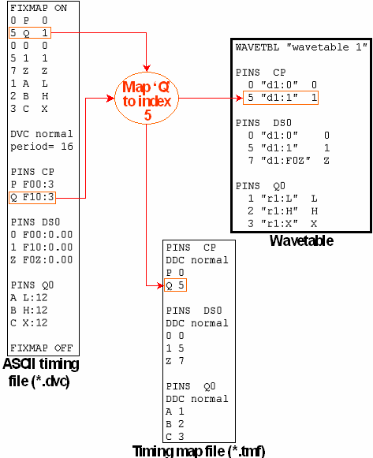

Structure of the FIXMAP Section
The general format of a FIXMAP section is as follows:
FIXMAP ON
<phys_wf_index_1> <state_char_1> [<dvc_name_1>]
<phys_wf_index_2> <state_char_2> [<dvc_name_2>]
...
<phys_wf_index_n> <state_char_n> [<dvc_name_n>]
DVC <ASCII_device_cycle_1>
period = <ASCII_device_cycle_period_1>
...
DVC <ASCII_device_cycle_m>
period = <ASCII_device_cycle_period_m>
...
[FIXMAP OFF]
The function of the individual statements is as follows:
- FIXMAP ON (mandatory):
This statement marks the beginning of a FIXMAP section.
- <phys_wf_index_i> <state_char_i>
[<dvc_name_i>](mandatory):
This statement defines a mapping between a state character and a physical waveform index. The mapping will be applied to all occurrences of the state character, even if the character is used for more than one pin and/or more than one ASCII device cycle of the FIXMAP section. Several state characters can be mapped to the same index.
The third, optional, column specifies a device cycle name. Note that if the same index occurs in more than one line, the name must be identical in all these lines.
- FIXMAP OFF (optional):
This statement marks the end of a FIXMAP section. If it is omitted, the ASCII interface assumes that the section extends to the next FIXMAPON statement, or to the end of the ASCII timing file.
The following figure illustrates the mechanism.
